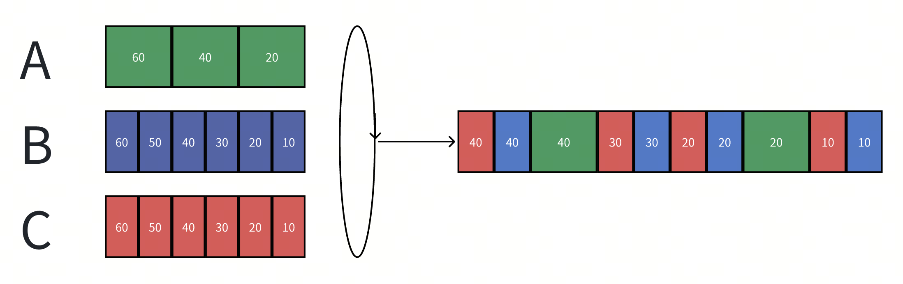
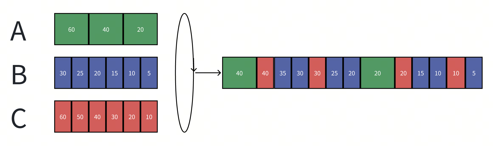
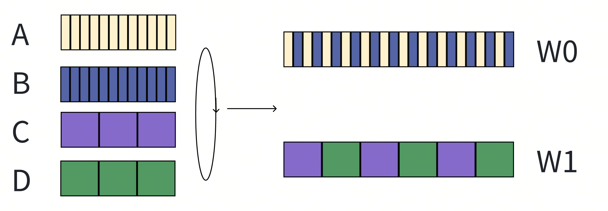
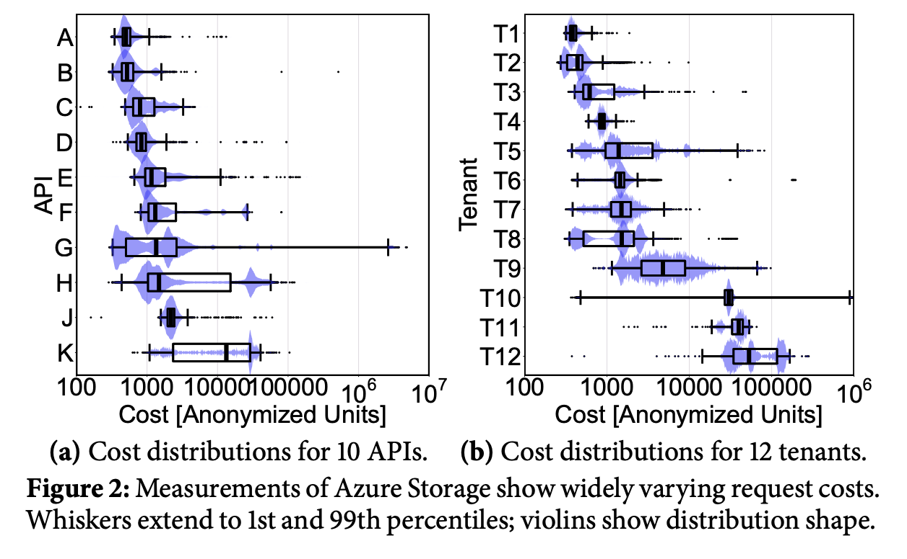
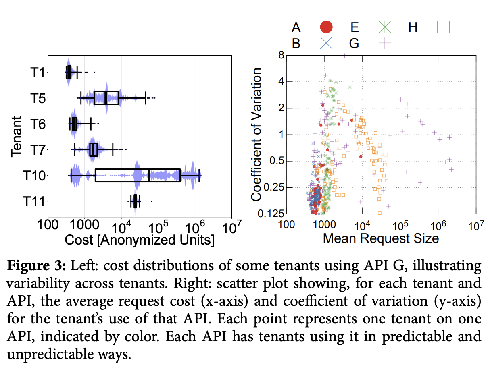
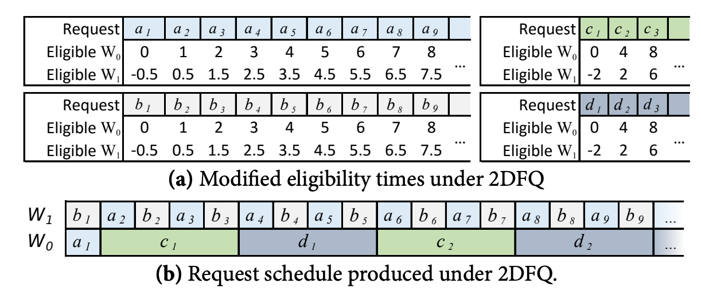

背景
多租环境下，同一个资源会被多个租户同时占用，不同租户对服务的请求彼此会相互竞争。在多租环境下，我们一般期望有以下的特性：
- Resource Isolation：资源的有限隔离。
- 不同特性租户彼此资源隔离，尽量减少对彼此之间的影响。
- Fairness Schedule：公平调度：
- 不同租户能够公平的分享资源，不能仅仅是不饿死；类似的需求的租户要有基本一致的用户体验。
- Smooth latency：稳定平滑的延迟：
- 单个租户看到的响应延迟尽可能稳定，不要出现突发的变化。 为了实现以上的需求，我们有多种手段：限流（Rate Limiting），隔离（isolation），调度（schedule）,调权（priority），相互支撑来达到目标。这次我们核心先介绍调度手段如何达成目标。
多租场景下的调度模型

如上图所示，用户A、B、C分别发出请求：
- Queuing过程：这个过程主要控制如何入队，一般由于Scheduler有调度上限，因此在容量打满后，Queuing还有额外的行为，如Blocking/Droping/Timeout等等。不是本文的重点。
- Schduling过程：这个过程主要控制如何出队，核心的决策方案会同时受到生产和消费两端的特性影响，是调度需要解决的核心问题。
FIFO or PriorityQueue
最简单的调度方式，这个情况下Scheduler本质上是一个Queue或者PriorityQueue。

由于调度只是简单的将入队位置忠实的反应出来，所以最终我们看到的调度结果受非常多因素影响，比如：
- 锁竞争时的唤醒顺序。
- 用户请求调用并发度。
- 权重插队。 所以导致我们最终的调度结果完全不满足多租环境下的公平性。
User Round-Robin Queue
为了解决这种完全不可控的场景，最简单的方案是引入一个轮询机制。
- 每个用户单独维护一个队列。
- Scheduler依照顺序依次轮询每个队列，并取出一个请求作为下一个请求。

可以看到出队顺序确实更加公平了，但是如果每个请求的开销并不那么一致呢？

- 用户A发出的请求需要两倍于B和C的时间。
- 最终的调度结果导致A占用了50%的资源，而B和C只能占用25%。
GPS（generalized processor sharing）
GPS（generalized processor sharing）是一个理想的公平调度模型，可以理解成流式的，任意的任意大小的时间间隔内，服务方都按照权重公平的进行资源占用。
- 如下图，S1这个租户占用0.5的权重，其他10个用户分别占用0.05的权重。理想的GPS服务如右图所示。

但是真实世界中，请求都是有最小不可分割的大小，而且过小的请求粒度对系统会造成额外的上下文切换成本。因此公平调度是尽可能逼近GPS模型，在尽可能小的粒度上公平。
Fair Queuing(FQ)
为了要达成公平，就必须区分每个请求的开销：
- 引入一个虚拟时钟来标识每个请求的消耗（比如请求的包体大小或者请求耗时等，核心是开发者希望在哪个层面上达到公平）。
- 同时系统按照自己预估负载能力向前推动时钟（类似于令牌桶，可以是承载的流量大小，CPU周期等等）。
- 并按照以下规则给所有入队的消息标识标记上如下属性。
- $A_f^j$：租户f 第j个到达的请求的到达对应的虚拟时钟时间。
- $L_f^j$：租户f 第j个到达请求的资源消耗大小。
- $S_f^j=max(A_f^j, F_f^{j-1})$：租户f 第j个请求的启动虚拟时钟时间。
- 可以看出当$S_f^j=F_f^{j-1}$时：队列出现了积压。
- $F_f^j=S_f^j + L_f^j$：租户f 第j个请求预计的完成虚拟时钟时间。
- 调度器按照$F_f^j$的从小到大的顺序出队。

- 最终，按长期的平均下来，A/B/C分别占用33%的资源。
Weighted Fair Queuing (WFQ)
更进一步，如果我们希望不同的租户具备不同的调度权重呢？我们只需要在$F_f^j$中引入调权因子$W_f$。
- $F_f^j=max(A_f^j, F_f^{j-1}) + L_f^j/W_f$ 在上面的Case中，如果我们将B租户增加两倍权重：

就可以达到B用户占用50%资源，而A/C用户各占用25%资源了。
Worst-Case Fair Weighted Fair Queuing (WF²Q)
WF²Q是WFQ的拓展版本，用于解决极端情况下的不公平，由于WFQ引入了权重，$F_f^j$不再能反应真实的请求结束时间，重新考虑GPS的场景：
- 由于S1的10倍权重占用，导致S1的前9个请求的$F_f^j$都小于其他租户同时到达的$F_f^j$，WFQ最终会调度出后面这个结果：其他租户的响应时间都增加了10倍。


WF²Q为了解决这个问题，添加出队约束：
- 只有当$S_f^j \le V_{now}$时，才允许这个任务被调度。

相较于WFQ，WF²Q的结果更加接近于GPS模型，在更小的粒度上实现了公平。
WFQ在多租场景中应用的挑战
上面的方案貌似让我们找到了完美的解决方案，但是在实际的多租场景中，直接应用WFQ依旧有不小的挑战。
并发
Scheduler的下游是一般是一个并发单元，可以并行处理多个任务。（WFQ这类算法一般都是为了串行调度设计的，如网络连接层的包转发，对并发场景的新问题并没有特别的优化），我们拓展一下上面的实验：
- A和B两个租户一直在发小的请求；C和D两个租户一直在发高耗时的请求。
- W1和W2分别是系统中的两个并发单元。 如果直接使用WFQ，我们会得到如下的调度结果：

- A和B用户的请求，会被C和D用户的请求Block，从而观察到请求响应的剧烈波动，称之为bursty schedule。
在无并发的场景下，我们无法做更深入的优化，但是在并发的场景下，我们有如下的优化空间：

- 耗时小和耗时大的请求会分别在两个并发单元中调度，从而彼此观察到的响应波动的比例大幅度缩减，称之为smooth schedule。
请求开销的浮动易变（方差极大）
不同租户的不同请求的资源开销与耗时跨度极大（可能是3-4个数量级的差距，） 如图是论文作者在Azure Storage多租服务上的统计：

浮动越大（方差越大），越容易让调度器调度出bursty schedule。
未知的资源开销
用户请求的资源开销和耗时难以预测，并且绝大多数请求都是不可预测的（如图是论文作者在Azure Storage上统计的某个API的开销，可以看到标准差极大）。 由于资源开销未知，我们就必须引入一个模型或者规则去估计资源开销来达成公平调度。一旦我们错误的低估了一些请求的开销，将会导致这些请求block住整个调度系统，造成低开销的请求饥饿，造成bursty schedule。
Two dimension Fair Queuing
2DFQ
WFQ不能实现平滑调度的核心原因是所有并发单元都是平等的，因此租户的任务总是可以阻塞住任意一个并发单元，当所有并发单元都被高消耗的任务阻塞住时，调度就不再平滑了。而2DFQ的思路就是让工作线程之间分个等级，部分工作线程负载调度高耗时的任务，剩余的线程负责调度低消耗的任务，从而让调度变得平滑。
2DFQ在WF²Q上进一步修改约束：
- 有$n$个并发工作单元，并且按固定下标$W_0,W_1,...W_{n-1}$排列。
- 在$W_i$上，只有当$S_f^j \le V_{now}-L_f^j \times \frac{i}{n}$时，才允许这个任务被调度。

- $W_0$这个并发单元的行为和WF²Q是完全一致的，所以他不会区分高开销和低开销任务。
- $W_1$这个并发单元会倾向于调度低耗时任务，因为它们的允许调度的阈值更小。
With Evaluation (2DFQ^e)
2DFQ优化了平滑调度的问题，但是还有另一个挑战就是我们总是无法合理的估计一个请求对应的资源开销。 一般都是通过历史某个时间窗口的请求记录来调整这个估计值，但是在特定的用户调用顺序下，极易出现错误的估计造成bursty schedule。
Bookkeeping: Retroactive Charging
在2DFQ和WFQ中，我们使用 $F_f^j=max(A_f^j, F_f^{j-1}) + L_f^j/W_f$计算一个请求的完成虚拟时钟时间。在未知资源开销的情况下，调整如下定义：
- $L_f^j$：租户f在第j次请求时的估算资源开销。
- $C_f^j$：租户f在第j次请求时的实际资源开销。
- 如果$C_f^j>L_f^j$，系统需要额外计算开销，否则系统需要返回给租户未使用的开销，即租户后续任务的开始与结束时间都调整$(C_f^j-L_f^j)/W_f$。
Pessimistic Cost Estimation
在2DFQ中，
- 如果高估了任务开销$C_f^j<L_f^j$：则低开销任务会从低耗时任务工作线程转移到高耗时工作线程，只会影响当前任务的响应速度，而不会影响其他低开销存量任务的响应速度。
- 如果低估了任务开销$C_f^j<L_f^j$：则高开销任务会从高耗时任务工作线程转移到低耗时工作线程，会影响其他低开销存量任务的响应速度。
所以2DFQ^e采用悲观开销预估：
- 租户对应的某类请求总是维护一个最高开销值，$L_f^{max}$作为未知请求的开销预估。
- 在Bookkeeping时，
- 如果$C_f^j>L_f^{max}$，则$L_f^{max}=C_f^j$。
- 否则，$L_f^{max}= \alpha L_f^{max}, \alpha<1$。 变量α用于控制悲观估计的收敛的激进程度，这个值必须是一个比较靠近1的值。
- α越接近1，收敛越慢，越不容易产生bursty schedule，但是当前租户的响应耗时恢复会偏长。
- 否则，容易产生bursty schedule，当前租户的响应耗时恢复会更短。
Bookkeeping: Refresh Charging
当一个租户长时间发出低开销请求时，$L_f^{max}$会是一个低估值，如果用户切换到高开销请求的状态时，如果并发度过高，还是会导致bursty schedule。
- 原论文给出方案是定时刷新，让估计重回到悲观状态，比如10ms一次。
- 我觉得高开销任务可以通过定时器触发感知，而不需要定时刷新。
Limitation
以上的调度器都是针对 work-conserving 系统描述的效果。
- work-conserving：系统的所有工作单元（Thread）总是在工作，只要调度器内有在等待的任务。（充分利用资源）
- non-work-conserving：系统的所有工作单元不总是在工作，可能会休息一段时间，等待任务积压调度。（允许资源浪费）
因此这类调度器都只能在work-conserving系统出现积压backlogged的时候生效，在一个系统资源未打满的环境中，调度策略都会退化，不生效。